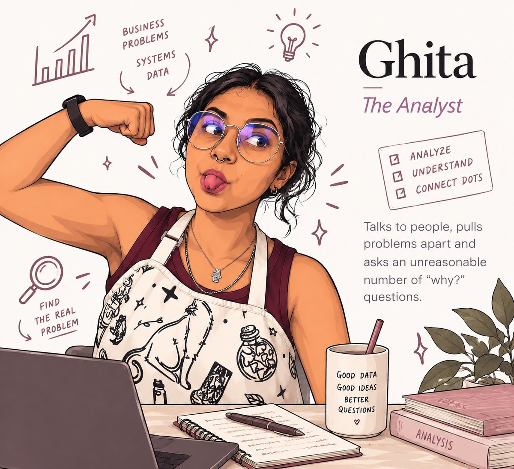
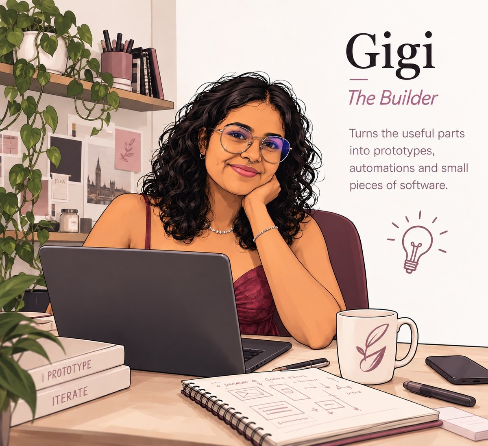
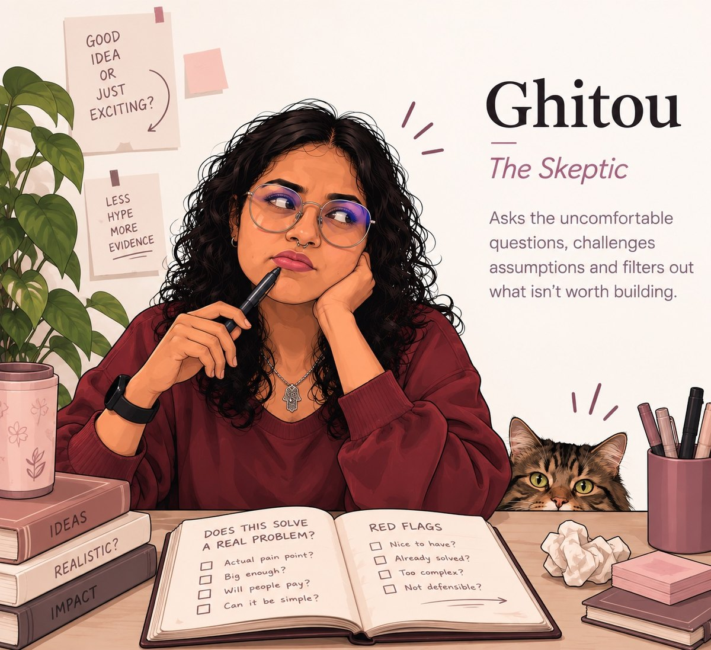

Ghita Labs is an independent product lab. I look for small, recurring problems in the way people work, understand them properly, and build focused software when there’s something genuinely worth fixing.
Not every experiment becomes a product. That’s the point.
EXP. 001PAUSED
Startly
An exploration of initiation friction: the gap between knowing what needs to be done and actually starting. The concept exposed a measurement problem that made the original product thesis difficult to validate reliably.
Status: postponed, not erased. The research remains useful, but the original direction is not being actively built.
EXP. 002RESEARCH
LedgerFold
Exploring a better way to understand and verify Shopify Payments activity, especially when the numbers in reports and the books don’t line up as cleanly as they should.
Currently speaking with bookkeepers and business owners to understand reconciliation workflows, edge cases and what is actually worth automating.
My work sits somewhere between business problems and technical systems, which means I spend a lot of time looking at the awkward space between “this should be simple” and “why are we still doing this manually?”
Ghita Labs is where I explore those problems independently and, when one proves worth solving, turn it into something useful.
01Business
Background in management and marketing.
02Systems
Professional experience translating messy business needs into functional and technical solutions.
03Technology & data
Hands-on experience with data, APIs, Python, cloud and software systems.
Open the equipment drawer
Python · SQL · APIs · Azure · Power BI · Postman · C# · Functional Analysis
Ghita Labs is an independent personal project and is not affiliated with or endorsed by my employer.
03
MEET THE LAB
Meet the team. Yes, it’s all Ghita.

A / 01
Ghita
The Analyst
Talks to people, pulls problems apart and asks an unreasonable number of “why?” questions.

B / 02
Gigi
The Builder
Turns the useful parts into prototypes, automations and small pieces of software.

C / 03
Ghitou
The Skeptic
Asks the uncomfortable questions, challenges assumptions and filters out what isn’t worth building.
Three roles, one founder. Ghita Labs is an independent one-person product lab founded by Ghita El Belghiti.
04
TALK TO THE LAB
Got something weird that shouldn’t still be this difficult?
If you work with Shopify Payments, have a recurring workflow that makes you think “there has to be a better way,” or simply want to say hello, I’d like to hear from you.